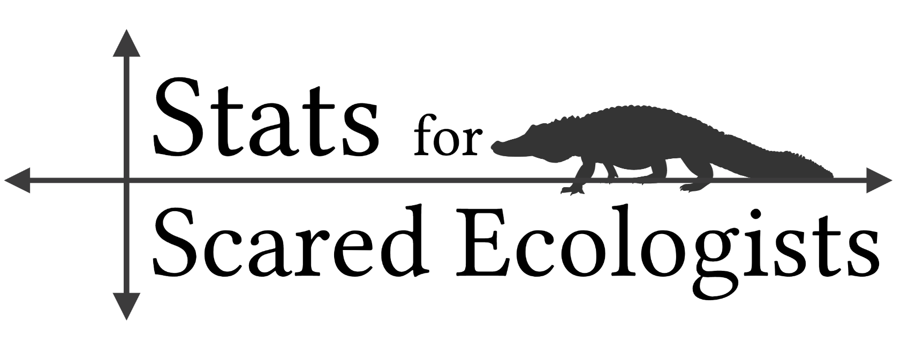

Howzit, I’m Guy, welcome to my website! Below, you will find my newer posts as well as links to some of my more popular blogposts.
Please feel free to contact me on email or Twitter if you have any questions or suggestions for blogposts.